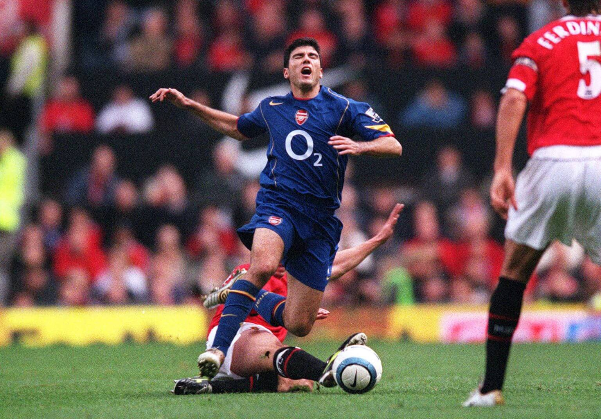
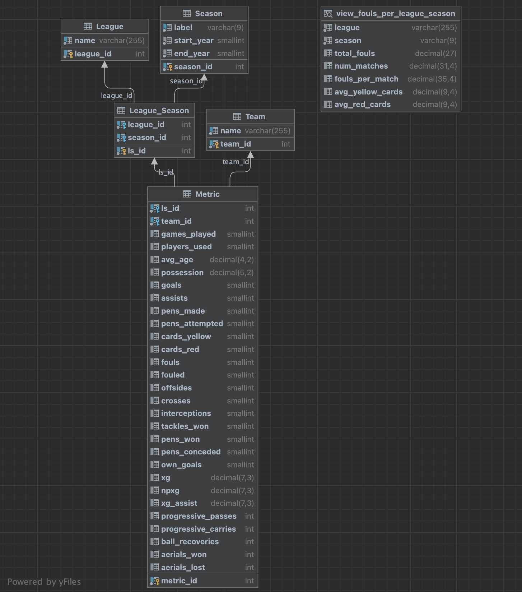

Motivation
Watching older matches from the early 2000s, it's hard not to notice how physical the game looked. Compared to modern day football, tackles felt heavier and fouls seemed far more frequent. That raised a question: Have football matches actually become less physical over time?
To answer this, I've built a small end-to-end data project: scraping team statistics, cleaning and normalizing them, modeling a structured SQL database on AWS RDS, and visualizing long-term trends with Tableau. Below is a summary of the full workflow and the interactive result.
Step 1 — Collecting the Data
I explored several sources and chose FBref, which publishes rich season-level team stats (goals, assists, fouls, cards, xG, etc) for major European leagues. I wrote a Python scraper to iterate through seasons/leagues and fetch the relevant tables, saving about ~130 CSV files (one per league-season).
- Leagues: Premier League (England), La Liga (Spain), Serie A (Italy), Bundesliga (Germany), Ligue 1 (France)
- Seasons: 1999-2000 through 2023-2024
- Saved outputs to
data_raw/<season>-<league>-Stats.csv
Step 2 — Cleaning & Standardizing
Next, I combined all raw CSVs into a single DataFrame and standardized columns (lowercase, underscores instead
of spaces), converted numerics, and removed clearly redundant fields (ex. some *_per90
metrics I can recompute with base columns). Some early seasons (1999-2006) had missing values.
Because imputing those would distort historical patterns, I kept them as NULL to preserve the true trend.
- Kept core columns such as
games_played,fouls,cards,possession,xG - Added
seasonandleaguecolumns parsed from filenames - Saved outputs to
data_clean/(both CSV and Parquet)
Step 3 — Normalized Database on AWS RDS
To store the cleaned data, I created a MySQL instance on AWS RDS and designed a Third Normal Form (3NF) schema. In simple terms, 3NF ensures that each piece of information is stored only once. Every table represents a single concept (ex. leagues, seasons, or teams), and redundant or repeating data is removed. This structure minimizes duplication, maintains consistency, and makes the database easier to extend for future analyses.
The resulting schema (below) separates data into five normalized tables, following 3NF principles:

Schema (3NF)
- League (league_id, name)
- Season (season_id, label, start_year, end_year)
- Team (team_id, name)
- League_Season (ls_id, league_id, season_id, UNIQUE(league_id, season_id))
- Metric (metric_id, ls_id, team_id, … stats …, UNIQUE(ls_id, team_id))
ETL Highlights
- Idempotent upserts for dimensions (League/Season/Team)
- Bridge table
League_Seasonto maintain 2NF/3NF - Insert/update of team-season
Metricrows
For analysis, I created a view that computes fouls per match by league and season:
-- v_league_season_fouls (core formula used in sql view)
fouls_per_match = SUM(fouls) / (SUM(games_played) / 2.0)
-- I divided the number of games played by 2 because each match appears twice in team-level data (one row per team).
Step 4 — Visualization (Tableau)
Finally, I connected Tableau directly to my AWS RDS MySQL database using the database's endpoint.
This live connection allowed Tableau to query aggregated views, such as v_league_season_fouls
in real time, so any updates in the database are instantly reflected in the visualization.
I then built an interactive line chart showing the trend in fouls per match over time,
colored by league, with tooltips showing the number of fouls per match, number of matches, and average yellow and red cards per season.
Interactive Chart
Use the filters on the right to focus on specific leagues or time windows.

What Did We Find?
The visualization suggests a broad decline in fouls per match from the early 2000s to the present, with some league-specific nuances. (Exact numbers depend on the league and season range selected.)
Possible explanations for this decline
- Rule emphasis & refereeing guidance: Stricter interpretation of reckless or dangerous tackles discourages physical play and encourages cleaner challenges.
- Evolution of tactics and team organization: Modern football emphasizes team cohesion and coordinated structures over individual physical duels. Players now defend collectively, cutting passing lanes rather than relying on heavy tackles.
- Video review era (VAR): Increased accountability through video review makes reckless fouls more costly, lowering player risk-taking.
Important to note that these are directional hypotheses. To establish causation, we would require event-level match data and controlled analyses (ex. before/after specific law changes).
Reproducibility & Project Details
Tech Stack
- Python (requests, BeautifulSoup, pandas, SQLAlchemy)
- MySQL on AWS RDS (3NF schema)
- Tableau for visualization
How to Run
- Scrape:
python fbref_scraper.py -s 1999 -e 2024 - Clean:
python data_cleaning.py - Load DB:
python load_db.py - Apply Views/Indexes:
python apply_sql.py -f views.sql
Key View
CREATE OR REPLACE VIEW view_fouls_per_league_season AS
SELECT l.name AS league, s.label AS season,
SUM(m.fouls) AS total_fouls,
SUM(m.games_played) / 2 AS num_matches,
SUM(m.fouls) / (SUM(m.games_played) / 2) AS fouls_per_match,
AVG(m.cards_yellow) AS avg_yellow_cards,
AVG(m.cards_red) AS avg_red_cards
FROM Metric m
JOIN League_Season ls ON m.ls_id = ls.ls_id
JOIN League l ON ls.league_id = l.league_id
JOIN Season s ON ls.season_id = s.season_id
GROUP BY l.name, s.label
ORDER BY l.name, s.label;